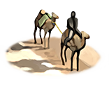
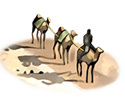
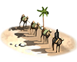

RTR: Imperium Surrectum
RTR: Imperium SurrectumIncense Trader
4 levels, each replacing the one before it — you upgrade in place rather than building alongside.
Incense Resin Collectors (Urban) → Incense Trader (Urban) → Incense Caravan (Urban) → Incense Exports (Urban)
Pictures are the game's own building art. Where a culture ships none of its own, the game falls back to another culture's, and that is what is shown here.
Levels at a glance
| Level | Cost | Build time | Minimum settlement | Upgrades to | Level | Cost | Build time | Minimum settlement | Upgrades to | ||
|---|---|---|---|---|---|---|---|---|---|---|---|
 | Incense Resin Collectors (Urban) | 2,000 | 3 | large town | Incense Trader (Urban) |  | Incense Trader (Urban) | 5,000 | 5 | city | Incense Caravan (Urban) |
| Incense Caravan (Urban) | 10,000 | 8 | large city | Incense Exports (Urban) |  | Incense Exports (Urban) | 19,000 | 12 | huge city | — |
Costs in denarii, build time in turns.
Incense Resin Collectors (Urban)

A modest incense trader has set up shop, enough to perfume a few temples and homes.
Without incense, how would we speak to the gods? Or cover the smell of those who can't bathe daily?
A modest stall where aromas of distant lands find eager buyers. The trade of incense is a delicate art, one that is appreciated by priests and perfume makers alike.
In this small establishment, exotic scents from distant lands are bartered, with traders making just enough to keep their incense burning… and their noses clear.
Incense not only perfumes the temples but also lines the pockets of those cunning enough to control its flow. Yet, a small operation like this is but a whiff of what could be.
| Cost | 2,000 denarii | Build time | 3 turns | Minimum settlement | large town | Upgrades to | Incense Trader (Urban) |
What it does
- +2 trade income
- +1 public order (happiness)
Incense Caravan (Urban)
A large-scale incense trading hub now thrives, perfuming both temples and pockets with vast profits.
They say wealth smells sweet, but this is absurd.
The incense trade has exploded in this region, with a vast network of traders and suppliers now funneling the finest fragrances from distant lands into every corner of the city. Nobles and priests alike clamor for the best, while traders revel in the wealth that flows as steadily as the incense smoke.
The sheer scale of this operation may turn heads, just try not to sneeze.
| Cost | 10,000 denarii | Build time | 8 turns | Minimum settlement | large city | Upgrades to | Incense Exports (Urban) |
What it does
- +4 trade income
- +2 population growth
- +3 public order (happiness)
Incense Trader (Urban)

A significant incense trader now fills the streets with exotic scents and heavier purses.
If the gods desire more incense, who are we to deny them? And if we profit in the process, so be it.
A hub for the finest incense, where the scent of profits fills the air. As trade expands, so does the aroma!
This larger incense trading operation has secured more trade routes and now moves vast quantities of the sacred scent, perfuming the wealthier homes and grander temples of the city.
The city smells sweeter, and the coin purse heavier, but with great aroma comes greater taxes.
| Cost | 5,000 denarii | Build time | 5 turns | Minimum settlement | city | Upgrades to | Incense Caravan (Urban) |
What it does
- +3 trade income
- +1 population growth
- +2 public order (happiness)
Incense Exports (Urban)

Incense is now being exported far and wide, enriching the region with each fragrant shipment.
Gold for scent? A fair exchange!
The incense trade has grown beyond local needs, and now the finest resins and aromatic goods are being exported across the Mediterranean, giving a happiness bonus in all your settlements.
The wealth flows in as fast as the incense flows out, making the region rich on the fragrance that perfumes the palaces and temples of distant lands.
This has become the land where incense travels far and wide, filling foreign lands with sacred smoke.
| Cost | 19,000 denarii | Build time | 12 turns | Minimum settlement | huge city |
What it does
- +5 trade income
- +2 population growth
- +4 public order (happiness)